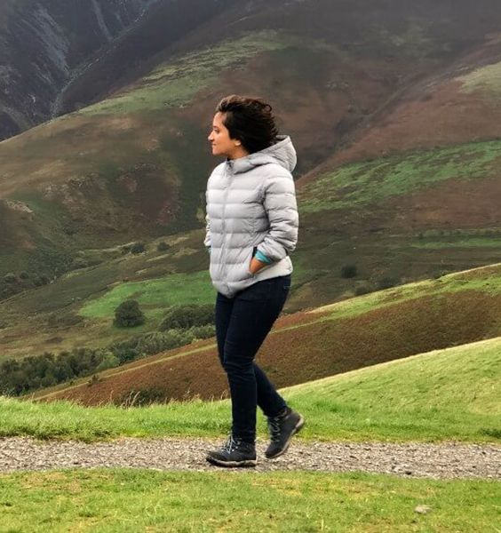
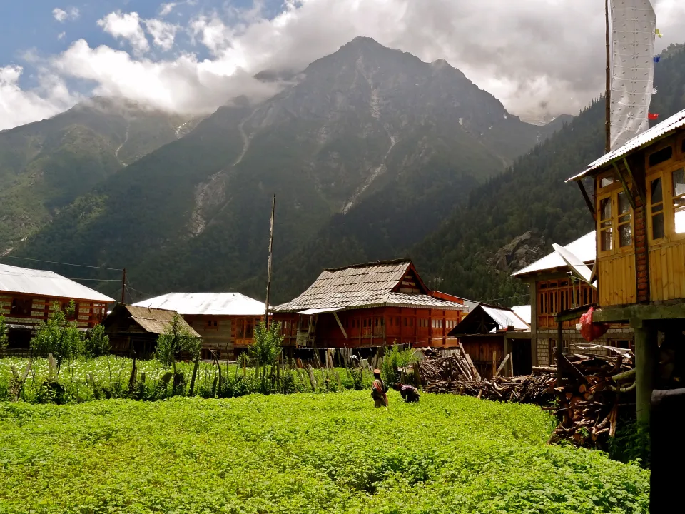
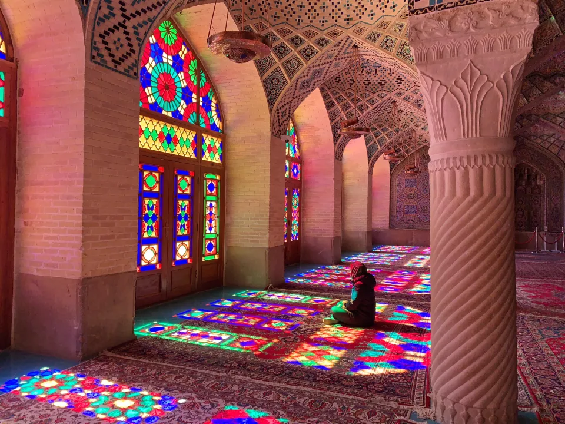
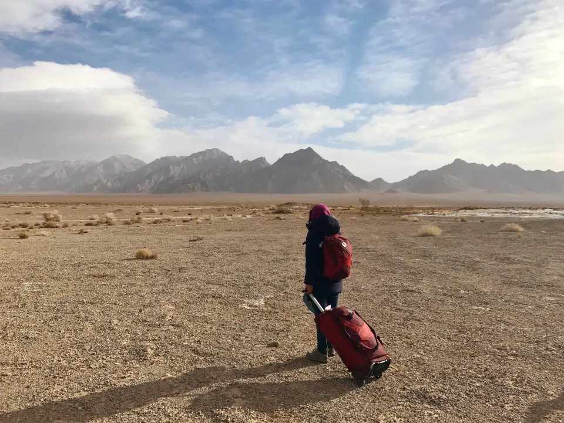
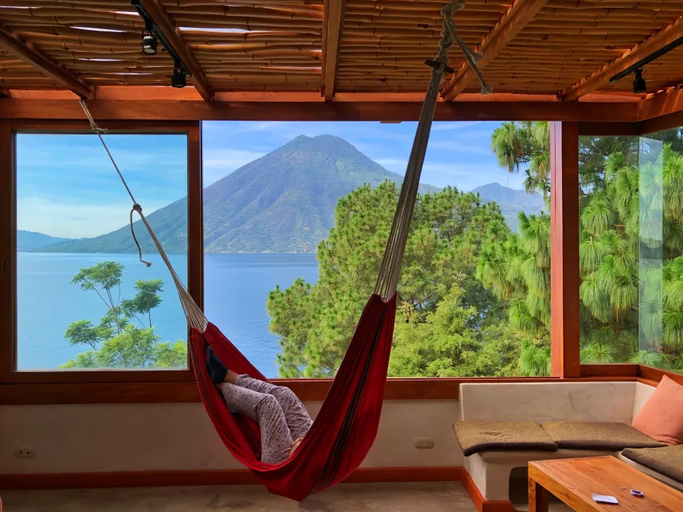
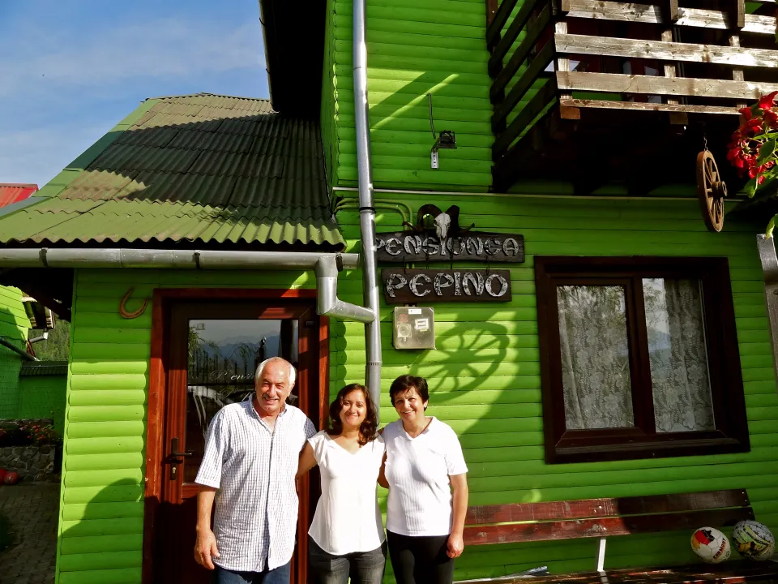

Places to visit in Switzerland
- The Matterhorn
- Jungfraujoch: The Top of Europe
- Interlaken
- Lucerne
- Lake Geneva
Places to visit in Canada
- Calgary
- Churchill
- Cape Breton Island
- Ottawa
- Whistler
Top Travel Bloggers
- 1. Shivya Nath
- 2. Archana Singh
- 3. Siddhartha Joshi
- 4. Lakshmi Sharath
- 5. Sankara Subramaniyam
Hello! I’m Shivya Nath.
In 2011, at age 23, I quit my corporate job with a dream of traveling the globe. Two years later, I packed up my life into a backpack and decided to hit the road indefinitely. I travel slow, seek offbeat and local experiences, stay in a place for a few weeks or as long as it inspires me, and move on.
How to be a responsible traveller: 5 Practical Tips
1. Expand your definition of travel
We need to think beyond sightseeing, and think in terms of art, music, food, history, dance, architecture, environment or whatever else truly holds meaning for us.
2. Pick countries under the radar or travel in off-season
On my recent trip to Tajikistan, I couldn’t wrap my head around the fact that here was a country with some of the most dramatic landscapes on earth – turquoise glacial lakes, rugged peaks, stark vistas – yet visited by so few people. Many would even struggle to name its capital city. On the other side of the world lie the much-romanticized Swiss Alps – now suffering from the ecological damage of having too many visitors!
3. Do a land journey – and when you can’t, fly responsibly
In the process, I’ve realised that a land journey is infinitely more adventurous than hopping on a plane – and can be a “destination” unto itself. The challenge of visas and land borders aside, it hearkens back to the days of famous travellers like Ibn Batutta and Hiuen Tsang.
4. Stay in eco-friendly, local-run accommodations
My fondest travel memories are not from posh hotels but from small homestays, guesthouses and lodges that creatively try to reduce their environmental footprint. I’m thinking of Grand Oak Manor in Binsar Wildlife Sanctuary, powered entirely by wind and solar energy.
5. Respect the local culture
To tell you the harsh truth, being an Indian traveller comes with a heavy burden. I’ve witnessed my fellow countrymen make aggressive demands at homestays, play loud music while hiking amid pristine landscapes, and show a lack of respect towards other cultures. A resort in Bali recently busted an Indian family trying to steal pretty much everything from a villa they stayed in, and Bhutan arrested an Indian biker for climbing atop a spiritually revered chortan.
This Blog contains pdf of Travel Tips
Click on the Pdf to download it:

This Blog also contains Audio File
Click on the Play Button to Listen it: